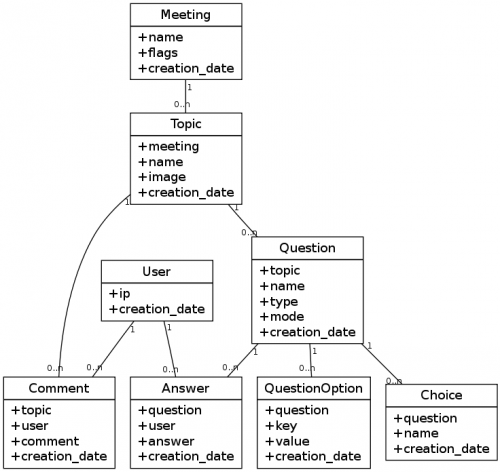

In der Regel will man Klassendiagramme in Dokumentationen synchron zu einem sich ändernden Quellcode halten. Der manuelle Weg ist einfach, aber nervig. Schöner ist es da doch, wenn man UML-Diagramme programmatisch erzeugen kann. Ein Dienst, der das ermöglich ist yUML.me, allerdings hat diese Engine einige Bugs, die selbst schon bei kleine Diagrammen auftreten und den Dienst damit unbenutzbar machen.
Für einfachere Klassendiagramme kann man aber auch GraphViz missbrauchen. Dazu eignet sich der Knoten-Typ record, bei dem mit Hilfe des Pipe-Symbols „|“ innerhalb des Namens des Knotens Felder definiert werden können.
Um die Klasse Meeting im Diagramm unten zu erzeugen, verwende ich diesen Text im Label des Knotens (siehe auch Zeile 4 im Quellcode unten):
{Meeting|+name\l+flags\l+creation_date\l}
Das „\l“ bewirkt einen linksbündigen Umbruch (standardmäßig werden Labels in Knoten zentriert dargestellt).

Der gesamte Quellcode für dieses Diagramm ist extrem kompakt und lässt sich prima aus Klassen-Informationen generieren:
digraph G {
graph [ rankdir=BT ]
node [ shape=record ]
Meeting [label="{Meeting|+name\l+flags\l+creation_date\l}"]
User [label="{User|+ip\l+creation_date\l}"]
Topic [label="{Topic|+meeting\l+name\l+image\l+creation_date\l}"]
Comment [label="{Comment|+topic\l+user\l+comment\l+creation_date\l}"]
Question [label="{Question|+topic\l+name\l+type\l+mode\l+creation_date\l}"]
QuestionOption [label="{QuestionOption|+question\l+key\l+value\l+creation_date\l}"]
Choice [label="{Choice|+question\l+name\l+creation_date\l}"]
Answer [label="{Answer|+question\l+user\l+answer\l+creation_date\l}"]
edge [ arrowhead=none headlabel="1" taillabel="0..n" fontsize=10 ]
Topic -> Meeting
Comment -> Topic
Comment -> User
Question -> Topic
QuestionOption -> Question
Choice -> Question
Answer -> Question
Answer -> User
}